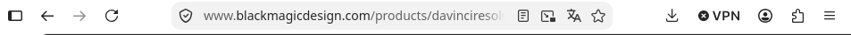
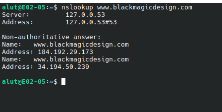
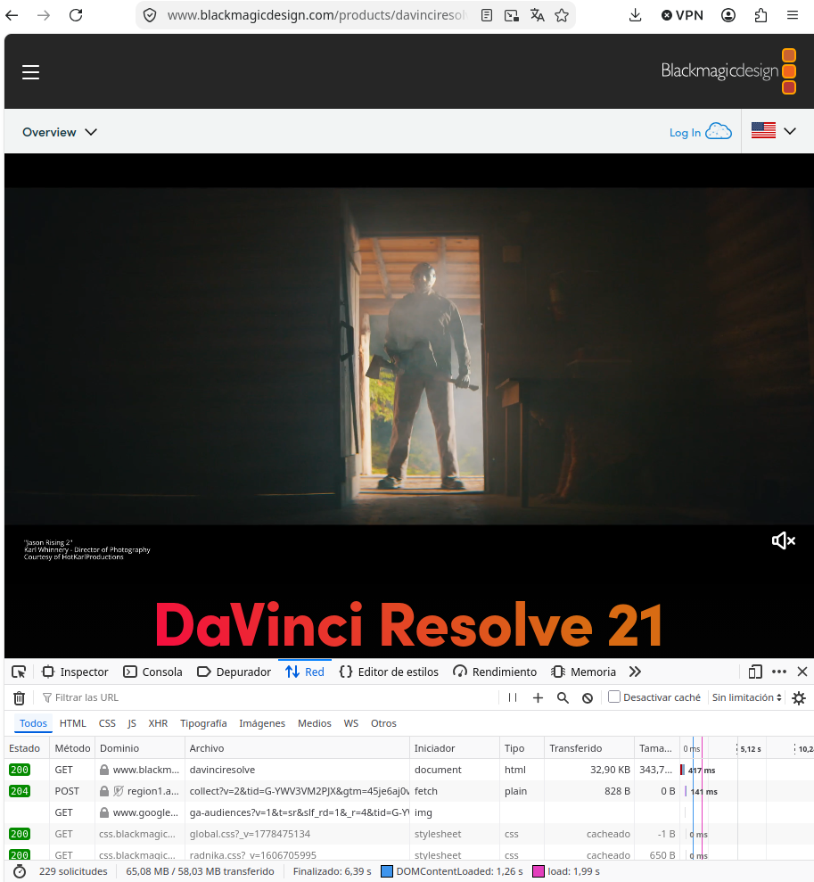
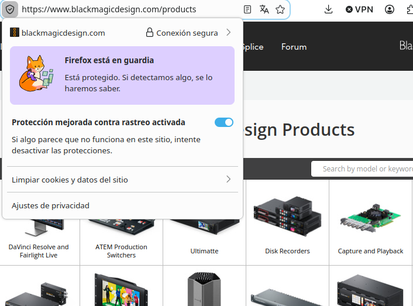
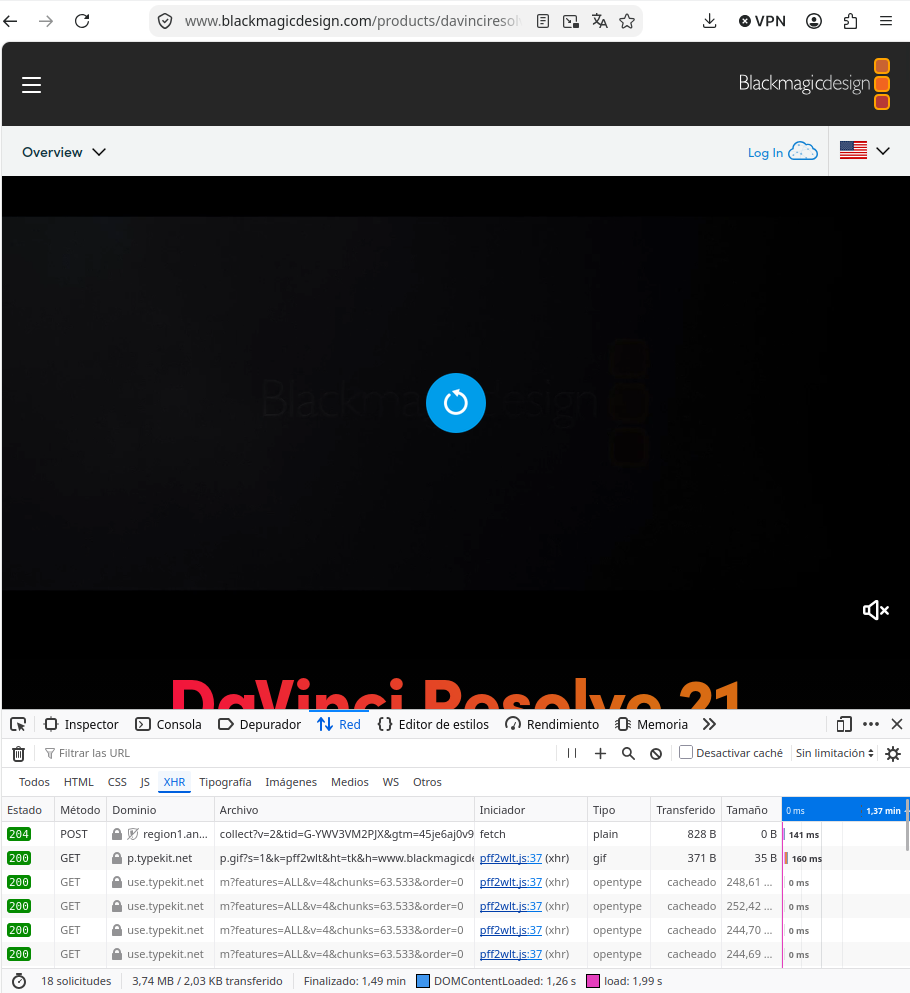

La web que he elegido
He elegido Blackmagic Design porque me encantan sus programas de edición como Davinci Resolve y Davinci Recolor.
Glosario
| Término | Definición con mis palabras | Ejemplo en mi web |
|---|---|---|
| Cliente | Es el dispositivo o programa (chrome, firefox, edge, tor, brave, etc) que utiliza una persona para solicitar páginas web. | En Blackmagic Design, el cliente es mi propio navegador web en mi ordenador, que envía peticiones HTTP GET a los servidores de Blackmagic Design para pedir la pagina de inicio, las imagenes de sus productos y las hojas de estilo. |
| Servidor | El servidor es donde se almacenan los datos (fisicamente, hardware), donde se almacenan los .html, .php, .css, .png y demás. | En este caso el servidor seria www.blackmagicdesign.com y como tal seria el encargado de mostrarnos todo dentro de la pagina. |
| Servidor web | Es el software o programa que se ejecuta dentro del servidor, encargado de escuchar las peticiones HTTP/HTTPS que hace el cliente y responder enviando los archivos (.html, .css, imágenes). | En esta web, es el servicio (como Nginx o Cloudflare) que recibe nuestra petición al entrar a www.blackmagicdesign.com y nos devuelve el código de la página con un estado 200 OK. |
| Apache | Es uno de los programas de servidor web más conocidos y veteranos; se encarga de recibir peticiones de los usuarios y entregarles las páginas web. | Aunque Blackmagic utiliza sistemas de distribución y balanceo como Cloudflare/Nginx en su capa externa, Apache representa el tipo de servidor HTTP tradicional que despacha contenido en arquitecturas web clásicas. |
| URL | Es la dirección única y completa que escribes en el navegador para encontrar y abrir una página o archivo específico en internet. | En nuestra web, la URL completa para acceder a la sección de productos es https://www.blackmagicdesign.com/es/products. |
| Protocolo | Es el conjunto de reglas y normas que define cómo deben comunicarse dos dispositivos entre sí para entenderse sin errores. | Al inicio de la dirección de Blackmagic vemos el protocolo HTTPS, que indica el uso de transferencias seguras y cifradas. |
| Dominio | Es el nombre fácil de recordar que identifica a un sitio web en internet para no tener que memorizar su dirección IP numérica. | En esta web, el dominio principal es blackmagicdesign.com. |
| Ruta | Es la parte de la dirección web que va después del dominio e indica la carpeta o página concreta que se está consultando. | En la dirección https://www.blackmagicdesign.com/es/products, la ruta es /es/products. |
| Dirección IP | Es la matrícula o identificador numérico único que tiene cada equipo conectado a internet para poder enviar y recibir datos. | Al hacer la resolución del dominio de Blackmagic Design en la consola, obtenemos direcciones IP públicas asignadas a sus servidores (demostrado en nuestra captura nslookup.png). |
| DNS | Es como la agenda telefónica de internet; traduce los nombres de dominio que escribimos a direcciones IP que las máquinas entienden. | Cuando escribimos blackmagicdesign.com en el navegador, el servicio DNS busca la IP de sus servidores para que podamos conectar con ellos. |
| HTTP | Es el protocolo estándar de comunicación que usan navegadores y servidores web para enviarse páginas, texto e imágenes. | Es el mecanismo base con el que nuestro navegador solicita cada imagen de las cámaras o páginas informativas al servidor. |
| HTTPS | Es la versión protegida de HTTP, que añade una capa de cifrado para que nadie entre el usuario y el servidor pueda espiar o modificar los datos. | Se aprecia en el candado verde/gris junto a la dirección de Blackmagic Design, garantizando que la navegación es privada y segura (como se ve en https.png). |
| Puerto | Es una puerta de entrada virtual numerada dentro de un servidor que permite dirigir el tráfico al servicio correcto (web, correo, etc.). | Al acceder a la web por HTTPS, la conexión se realiza por defecto a través del puerto seguro 443 del servidor. |
| Petición | Es el mensaje que el navegador envía al servidor pidiéndole ver una página, descargar un archivo o enviar un formulario. | Ocurre cuando pulsamos en la pestaña de DaVinci Resolve y el navegador envía una petición HTTP GET para obtener ese contenido (visible en red.png). |
| Respuesta | Es el paquete de datos que el servidor manda de vuelta al navegador tras procesar la petición, incluyendo el contenido o un aviso de error. | Es el código HTML, estilos CSS y fotografías que el servidor de Blackmagic nos envía de vuelta para pintar la página en pantalla. |
| Código de estado | Es un número de tres dígitos que el servidor incluye en su respuesta para avisar al navegador de cómo ha ido la solicitud (éxito, error, redirección). | En la pestaña Red (red.png) se comprueba que la página principal responde con el código 200 OK, indicando que la carga ha sido exitosa. |
| Web estática | Es una página web cuyos archivos están guardados tal cual en el servidor y siempre muestran el mismo contenido a todos los visitantes sin cambiar. | Partes informativas fijas de Blackmagic, como el texto legal de términos de uso o la ficha estática de especificaciones de un cable. |
| Web dinámica | Es una web cuyo contenido se genera o actualiza al momento mediante código y bases de datos según el usuario, idioma o búsqueda. | La tienda oficial de Blackmagic o los filtros de soporte técnico y descargas, que varían según el país seleccionado y el producto que busques. |
| PHP | Es un lenguaje de programación que se ejecuta en el servidor web para crear páginas dinámicas antes de mandárselas al usuario. | Representa la tecnología del lado del servidor que procesa las consultas de compatibilidad de cámaras o los formularios de registro de DaVinci Resolve. |
| Base de datos | Es un almacén digital organizado donde se guardan grandes cantidades de datos (usuarios, productos, precios) para consultarlos rápidamente. | El sistema donde Blackmagic tiene almacenado todo su catálogo de productos, números de serie, versiones de software y precios por región. |
| LAMP | Es un paquete clásico de tecnologías libres para montar servidores web: Linux (sistema), Apache (servidor web), MySQL (base de datos) y PHP (lenguaje). | Es la infraestructura típica sobre la que se fundamentan los servicios de backend y paneles internos para gestionar sitios web como el de Blackmagic. |
| JSON | Es un formato de texto muy ligero y ordenado (con claves y valores entre llaves) que usan los programas para pasarse datos entre sí. | Se evidencia en la captura json.png, donde las llamadas asíncronas de la web reciben listados de datos estructurados para actualizar la interfaz. |
| XML | Es un lenguaje de etiquetas similar al HTML pensado para almacenar y transportar datos de forma estructurada y legible para humanos y máquinas. | Se utiliza en la web en archivos como el sitemap (mapa del sitio XML) para que los motores de búsqueda como Google indexen todos los productos de Blackmagic. |
Evidencias




